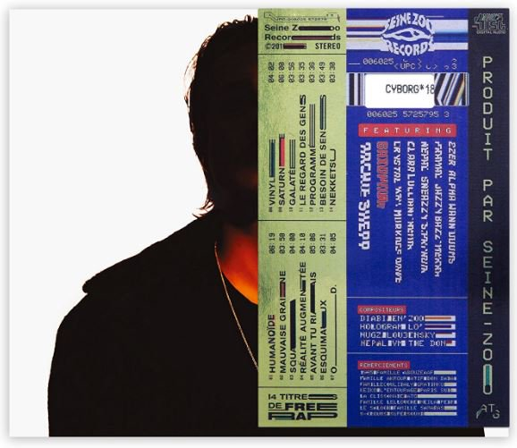

Σ. MOROSEE est le quatrieme son de l'album QALF infinity. Il est associe a la 18e lettre de l'alphabet grec, sigma, lettre qui est utilisee en mathematiques dans l'ecriture de la sommation de la somme de plusieurs termes. Dans une ambiance qui varie entre le chant et le rap et sur une instrumentale melodique MOROSEE est le quatrieme son de l'album QALF infinity. Dans une ambiance qui varie entre le chant et le rap et sur une instrumentale melodique
Σ. MOROSEE est le quatrieme son de l'album QALF infinity. Il est associe a la 18e lettre de l'alphabet grec, sigma, lettre qui est utilisee en mathematiques dans l'ecriture de la sommation de la somme de plusieurs termes. Dans une ambiance qui varie entre le chant et le rap et sur une instrumentale melodique MOROSEE est le quatrieme son de l'album QALF infinity. Dans une ambiance qui varie entre le chant et le rap et sur une instrumentale melodique
Le titre de la quinzieme piste de l'album, Deconnecte, semble polysemique. La deconnexion peut a la fois faire reference a l'image publique du duo, etant absent de tous les medias, mais aussi a leur originalite musicale avec un style unique et detacher du reste de la scene francaise.

On remarque que ce titre est compose d'un grand nombre de questions, dans lesquelles Nekfeu pourrait s'adresser directement a l'auditeur, comme pour le mettre a parti et le faire reflechir sur sa propre situation.